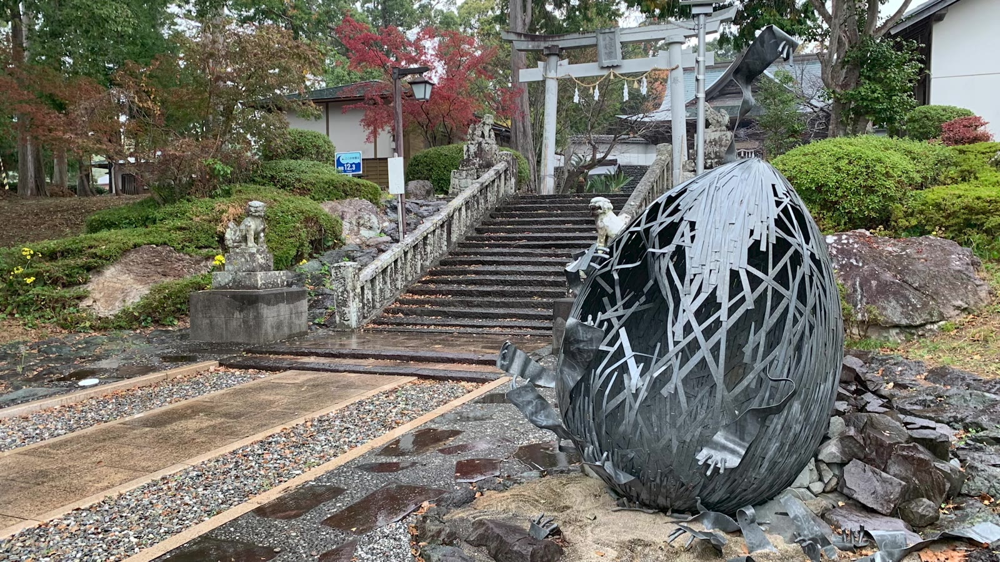

設置作品写真 3枚
設置作品写真 3枚湧昇の夢
中土佐町立美術館（高知県）の入口赤・黄・青・白の鉄の羽が、黒い鉄の柱に沿って空へ舞い上がる。美術館の入口で来館者を迎えるモニュメントです。
おすすめ：エントランス・前庭のシンボルにロビーを、小さな美術館に。
高知の鉄の作家・池内卓也の彫刻を、会期ごとに入れ替える「ロビーギャラリー」としてレンタルでご提供します。
展示プランを作ってみる →
ロビーに常設の作品を置くのではなく、会期を決めて作品を入れ替える。ホテルの中に“展覧会”があることが、滞在の楽しみと、また来る理由になります。
「◯月まで展示中」という区切りが、今行く理由・また行く理由をつくります。
展示替えのたびに、館内やSNSで伝えられるニュースが生まれます。
購入ではなくレンタルなので、まずは一会期から試せます。
期間と、作品を置く場所の数を選ぶと、会期ごとの展示計画の例ができます。
※ 会期の長さ・作品の組み合わせは一例です。作品のレンタル可否や時期により変わります。
展覧会のように作品名と素材を添えてご紹介できます。掲載作品のレンタル可否は作品の設置状況により異なります。

鉄で編んだ人の背丈ほどの卵と、見守る一羽の鳥。

針金の手足に支えられた、風化した仮面。

鉄の茎と葉、種の形。中庭や窓際に。
錆鉄の花が石を抱き、ふちに透かしの蝶。

ねじった鉄筋の幹から、枝と根が広がる。

鉄の葉がフックになるコートかけ。クロークに。（写真は設置イメージ）
期間・料金は、作品・点数・設置場所・搬入条件をうかがってお見積りします。
はい。まずは一会期から試し、続けるかをご検討いただけます。
使い方をうかがったうえでご相談ください。
屋外に設置されてきた作品もあります。環境をうかがってご提案します。
作品によってはご相談いただけます。
NEW2026年10月撮影 ／ 作家 池内卓也
2026年10月に撮影した写真と映像です。屋外のモニュメントから庭に置ける小さな作品まで、宿の中庭やエントランスに迎えたときの姿を思い描いてください。
設置作品写真 3枚赤・黄・青・白の鉄の羽が、黒い鉄の柱に沿って空へ舞い上がる。美術館の入口で来館者を迎えるモニュメントです。
おすすめ：エントランス・前庭のシンボルに 設置事例写真 3枚
設置事例写真 3枚細い鉄の帯を幾重にも編んだ大きな球に、身を乗り出すような人の姿。見る角度で表情が変わります。ワイナリーの高台の庭に設置されています。
おすすめ：中庭・眺めのよいテラスに 実物写真 8枚
実物写真 8枚鉄の葉、銀色の花、鎖の脚のテーブル、蝶のとまるランプ、小さな動物たち。庭の緑の中に点々と置ける、小ぶりな作品です。
おすすめ：中庭や露天風呂へのアプローチに 実物
実物これまで設置イメージでご紹介していたベンチの実物です。木の座面に細い鉄の脚、先端には鉄の頭がつきます。
おすすめ：中庭・テラスでひと休み 展示写真 2枚
展示写真 2枚錆びた鉄の胴体に、レースのように透かし彫りした羽。台座の上で、光と影の模様をつくります。
おすすめ：ロビー・ラウンジの展示に 施工例
施工例花のモチーフを透かしたロートアイアンの門扉。有限会社アイエル物産が手がけてきた、暮らしの鉄の仕事です。
おすすめ：宿の門まわりのオーダー制作に※ ページ上で流れる短い映像は音声なしです。「全編を見る」「映像を見る」はYouTubeで再生します。「作品名確認中」の作品名は仮のものです。掲載作品のレンタル可否・時期は作品の設置状況により異なります。門扉はレンタルではなくオーダー制作のご紹介です。